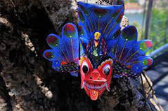

Sri Lanka’s traditional art and culture scene brims with uniqueness. Representing it in all authenticity for decades is Ambalangoda Mask Factory & Museum. Enter this haven of ancient culture and you’ll find intriguing masks staring at you.
Along with two entire collections belonging to the Sanni Yakuma ritual and Kolam Dance, primitive tools used to carve these marks are also displayed here.The museum has a small library and a mask workshop as well.
The mask library is one of its kind in Sri Lanka. It has anthropological records of mask-making and the history of traditional performances that use masks.
Head to the workshop and watch the artisans work their magic on a piece of wood. The carvings and the traditional colours breathe life into them. Take a few masks as souvenirs or an unpainted one for you to unmask your creativity.
Visit us
Tradition to Decoration
Guardians of Tradition
Embodying Tradition
Ritual to Decoration
Tradition to Decor
Ritualistic Décor
Lakpura Masks serves as a gateway to the fascinating world of Sri Lankan traditional mask-making, where art, culture, and history converge in a vibrant tapestry of creativity and tradition. Nestled amidst the island's lush landscapes and steeped in centuries-old customs, our collection of meticulously crafted masks stands as a testament to Sri Lanka's rich cultural heritage. Each mask in our curated selection is a masterpiece of artistry and craftsmanship, painstakingly handcrafted by skilled artisans following age-old techniques passed down through generations. From the intricate details of the carving to the vivid colors that adorn each piece, every mask tells a story—a story of folklore, mythology, and spiritual beliefs deeply rooted in Sri Lankan culture.
At Lakpura Masks, we are dedicated to preserving and promoting this cherished cultural legacy. Through our commitment to authenticity and quality, we strive to honor the traditions of Sri Lanka's mask-makers and ensure that these exquisite artworks continue to inspire awe and wonder for generations to come. Our diverse collection showcases the breadth and depth of Sri Lanka's mask-making traditions, from the fearsome demon masks of the southern regions to the colorful ritual masks used in traditional dance performances. Each mask embodies the spirit of its creator, reflecting the unique styles, motifs, and symbolism found across the island.
The traditional mask company was born from a passion for cultural heritage. Founded by artisans with a deep respect for tradition, it began as a modest endeavor. Through meticulous craftsmanship and unwavering dedication, the company flourished. Today, it stands as a beacon of authenticity, offering a diverse array of masks that celebrate the rich tapestry of human expression. Each mask tells a story, preserving the essence of centuries-old traditions.
The Directorial Collective